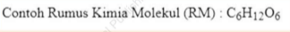

E. UJI KOMPTENSI
PILIHAN GANDA
Berilah tanda silang (X) pada pilihan jawaban yang benar !
- Untuk memperindah file teks biasa yang akan ditampilkan pada browser dengan menambahkan tag-tag pada file teks biasa tersebut digunakanlah HTML. Yang merupakan kepanjangan HTML adalah...
- Hyper Text Markup Language
- Hyperlinks and Text Markup Language
- Home Tool Markup Language
- Hyper Train Markup Language
- Hyper Trill Markup Language
- Pemberian warna pada halaman website dapat menggunakan nama warna atau dengan menggunakan kode hexadecimal sesuai dengan warna yang diinginkan. Kode untuk hexadecimal #000000 merupakan kode untuk warna
- Hitam
- Putih
- Merah
- Abu - Abu
- Kuning
-
Diberikan bacaan seperti di bawah ini :
HTML element body menunjukkan konten sebuah dokumen. Isi dari sebuah dokumen HTML yang akan ditampilkan pada jendela browser terdapat pada elemen <body>, sedangkan informasi dan keterangan lainnya yang berkaitan dengan dokumen tersebut dapat ditulis pada element <head>.
Jika kita ingin membuat tulisan lebih tebal daripada teks normal pada halaman web seperti teks dokumen pada bacaan diatas adalah menggunakan tag HTML... -
Perhatikan bacaan pada soal no 3!
Jika kita ingin membuat tulisan miring pada halaman web seperti teks informasi pada bacaan diatas adalah dengan menggunakan tag HTML... - Dalam penulisan file HTML, teks yang muncul pada title bar didefinisikan di antara tag...
- <head> dan </head>
- <title> dan </title>
- <bar> dan </bar>
- <title bar> dan </title bar>
- <body> dan </body>
- Tag HTML yang digunakan untuk menandai sebuah paragraf dari dokumen HTML yang dibuat adalah ...
- Tag HTML yang benar untuk menyisipkan baris baru adalah ...
- Tag HTML yang digunakan untuk memisahkan teks menjadi baris baru adalah ...
- Untuk membuat animasi teks berjalan dari kiri ke kanan dalam halaman web digunakan perintah ...
- <marquee> teks </marquee>
- <marquee direction="left"> teks </marquee>
- <marquee direction="right"> teks </marquee>
- <marquee <direction="left"> teks </direction></marquee>
- <marquee <direction="right"> teks </direction></marquee>
- Berikut ini contoh penulisan tag HTML dan atribut untuk menentukan warna latar belakang dari badan dokumen yang benar, kecuali ...
- <body bgcolor="red">
- <body background="red">
- <body bgcolor="#FFFFFF">
- <body bgcolor="#ffffff">
- <body bgcolor="#ff0022">
- Tag heading yang terkecil dalam HTML adalah ...
- Tag HR memiliki atribut ...
- size
- width
- height
- size dan width
- size dan height
-
Disajikan rumus kimia sebagai berikut:

Untuk membuat teks menjadi seperti angka 6 dan 12 dalam rumus kimia di atas dalam Html digunakan tag ... - C<superscript>6</superscript>H<superscript>12</>O<superscript>6</superscript>
- C<subscript>6</subscript>H<subscript>12</>O<subcript>6</subscript>
- C<sub>6</sub>H<sub>12</sub>O</sub>6</sub>
- C<sup>6</sup>O<sup>6</sup>
- <superscript>C6H12O6</superscript>
-
Disajikan rumus matematika sebagai berikut :
Contoh Rumus Matematika : 42 = 16
Tag HTML yang digunakan untuk membuat angka 2 pada rumus matematika diatas adalah... - <superscript>...</superscript>
- <sup>...</sup>
- <sscript>...</sscript>
- <subscript>...</subscript>
- <sub>...</sub>
- Berikut ini contoh penulisan tag HTML dan atribut untuk menentukan warna latar belakang dari badan dokumen yang benar, kecuali
- <BODY BGCOLOR="red">
- <BODY BACKGROUND="red">
- <BODY BGCOLOR="#FFFFFF">
- <BODY BGCOLOR="#ffffff">
- <BODY BGCOLOR="0022">
- Atribut FACE digunakan untuk ...
- Menentukan warna teks
- Menentukan ukuran huruf
- Menentukan ketebalan teks
- Menentukan posisi teks
- Menentukan jenis huruf
- Berikut ini adalah bentuk atribut type pada tag <ul>, kecuali ...
- disc
- square
- circle
- disc and square
- number
-
Disajikan tampilan halaman web berupa daftar harga makanan sebagai berikut :

- Disc
- Square
- Circle
- Disc & Square
- Secara default, tipe ordered list yang keluar dalam halaman web adalah ...
- 1
- i
- I
- ©
- Ω
- Tag HTML yang digunakan untuk menampilkan sebuah gambar dalam halaman web adalah ...
- <img>
- <image>
- <jpg>
- <bmp>
- <gambar>